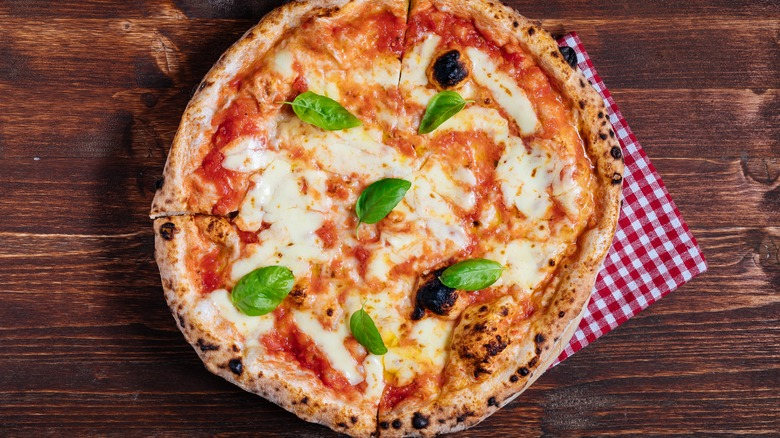

Pizza recipe

Description
Pizza is a typical italian dish, one of the most beloved. So simple yet so good, there are a lot of variations.
Enjoy one of the most simple recipe, and deep dive into one of the typical italian traditions!
Ingredients
- 1 cup warm water (45 degrees C);
- 1 package active dry yeast;
- 1 teaspoon white sugar;
- 2 ½ cups bread flour;
- 2 tablespoons olive oil;
- 1 teaspoon salt.
Steps
- Gather all ingredients. Preheat oven to 230 degress C, and lightly grease a pizza pan;
- Place warm water in a bowl; add yeast and sugar. Mix and let stand until creamy, about 10 minutes;
- Add flour, oil, and salt to the yeast mixture; beat until smooth. You can do this by hand or use a stand mixer
fitted with a dough hook to make it easier;
- Let rest for 5 minutes;
- Turn dough out onto a lightly floured surface and pat or roll into a 30cm circle;
- Transfer to the prepared pizza pan;
- Spread crust with sauce and toppings of your choice;
- Bake in the preheated oven until golden brown, 15 to 20 minutes. Remove from the oven and let cool for 5 minutes before serving.
Want to see other recipes? See them going back home